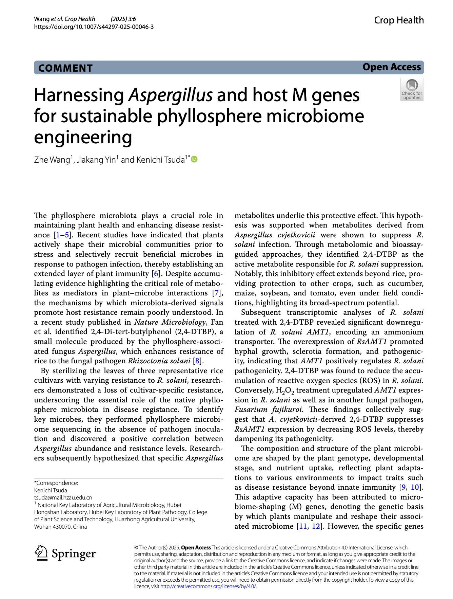
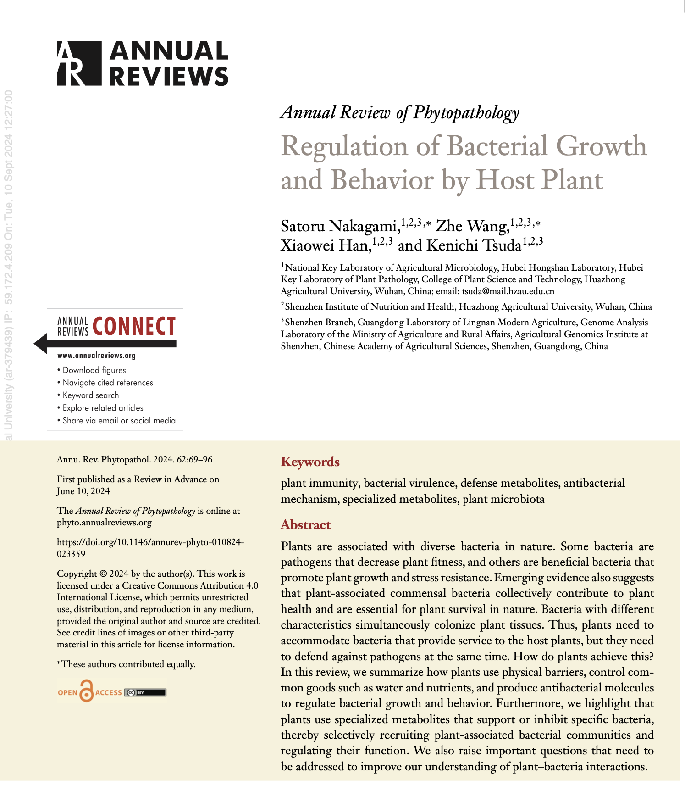

Core Questions核心问题
- Plant-pathogen-microbiome interactions植物-病原-微生物组互作
- Phyllosphere microbiome assembly and function叶际微生物组的组装与功能
- Microbiome-mediated disease suppression微生物组介导的病害抑制
- Host control of microbial community dynamics宿主对微生物群落动态的调控
I am particularly interested in how plants recruit, shape, or depend on microbial communities under pathogen pressure. My research explores how microbial members in the phyllosphere influence host health, pathogen behavior, and microbiome-mediated disease outcomes. 我尤其关注植物在病原压力下如何招募、塑造或依赖微生物群落。我的研究试图揭示叶际微生物成员如何影响宿主健康、病原行为以及由微生物组介导的病害结果。
Methodologically, I like connecting data-rich approaches with mechanistic questions. That usually means combining multi-omics, microbial ecology, and carefully designed experiments rather than treating any one technique as sufficient on its own. 在方法上，我倾向于把数据密集型手段和机制问题真正连接起来。这通常意味着把多组学、微生物生态学和精心设计的实验结合起来，而不是把任何单一技术当作全部答案。
I also care about scientific communication. Alongside papers and conference work, I write public-facing research notes and commentary through my WeChat Official Account. 我也很重视科研传播。除了论文与会议工作外，我会通过个人微信公众号撰写面向公众的科研笔记与学术评论。
This homepage offers a concise overview of my research interests, working approaches, and recent academic work. 这个主页用于简要展示我的研究兴趣、研究方法与近期学术工作。
Wang Z*. Living with the enemy: plants outsource their defense to fungal gatekeepers. Plant and Cell Physiology, pcag004 (2026). [Commentary Article] Wang Z*. Living with the enemy: plants outsource their defense to fungal gatekeepers. Plant and Cell Physiology, pcag004 (2026)。[述评文章]
This article comments on Kei Hiruma, Kuldanai Pathompitaknukul, Hiroyuki Tanaka, Yuki Iwaguchi, Shunsuke Miyashima, Nanami Kawamura, Atsushi Toyoda, Takehiko Itoh, and Yusuke Saijo, “Host-mediated endophyte-pathogen competition in roots enables asymptomatic fungal colonization in Arabidopsis thaliana,” Plant and Cell Physiology, 2025, pcaf126. 这篇文章是对 Kei Hiruma、Kuldanai Pathompitaknukul、Hiroyuki Tanaka、Yuki Iwaguchi、Shunsuke Miyashima、Nanami Kawamura、Atsushi Toyoda、Takehiko Itoh 和 Yusuke Saijo 论文的 Commentary，主题是根部内生真菌与病原在宿主介导下的竞争如何帮助 Arabidopsis thaliana 实现无症状真菌定殖。
The manuscript went through repeated revisions and a winding path before publication. With Ken's support, it was eventually published under my sole authorship, which made it especially meaningful to me. 这篇稿件经历了反复修改与颇为曲折的发表过程，最终在 Ken 的支持下以我唯一作者的身份发表，因此对我而言格外重要。

Wang Z, Yin JK, Tsuda K*. Harnessing Aspergillus and host M genes for sustainable phyllosphere microbiome engineering. Crop Health, 3(1):6 (2025). [Commentary Article] Wang Z, Yin JK, Tsuda K*. Harnessing Aspergillus and host M genes for sustainable phyllosphere microbiome engineering. Crop Health, 3(1):6 (2025)。[述评文章]

Nakagami S#, Wang Z#, Han XW, Tsuda K*. Regulation of bacterial growth and behavior by host plant. Annu. Rev. Phytopathol., 62:12.1-12.28 (2024). [Review] Nakagami S#, Wang Z#, Han XW, Tsuda K*. Regulation of bacterial growth and behavior by host plant. Annu. Rev. Phytopathol., 62:12.1-12.28 (2024)。[综述]
I enjoy playing badminton, and I share some of those moments on Bilibili. 我很喜欢打羽毛球，也会在 Bilibili 记录一些打球片段。
I also run a WeChat Official Account where I write about science, research life, and personal reflections in Chinese. 此外，我也在运营个人微信公众号，用中文分享科研、学术生活和一些日常思考。
These writings reflect my interests in research life, academic communication, and personal observation beyond journal articles. 这些内容主要记录我在科研生活、学术传播与日常观察中的一些思考，作为论文之外的个人表达。
I keep my full academic record on a separate Scientific CV page, including education, research experience, publications, awards, academic service, and conference presentations. 我把完整的学术履历放在单独的学术简历页面中，包括教育背景、科研经历、论文发表、奖励荣誉、学术服务和会议报告。
For complete details, please visit the dedicated Scientific CV page. 如需查看完整信息，请进入单独的学术简历页面。